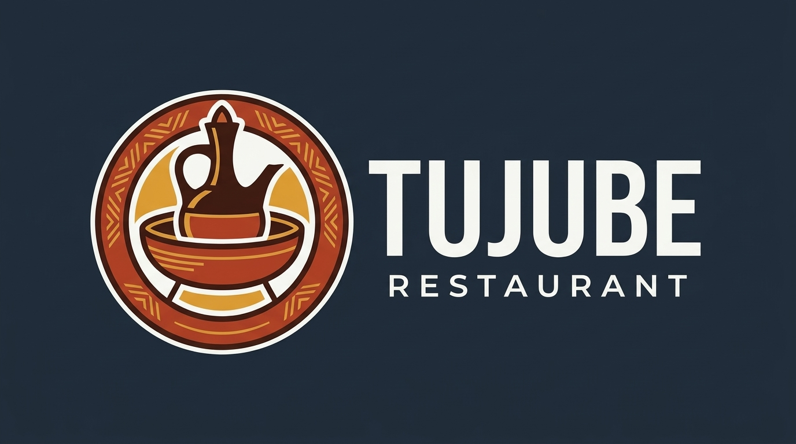
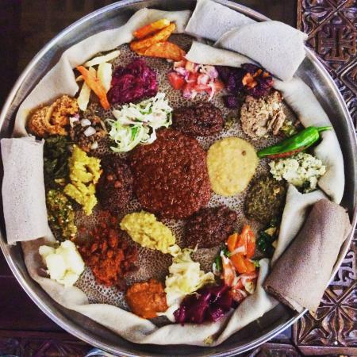
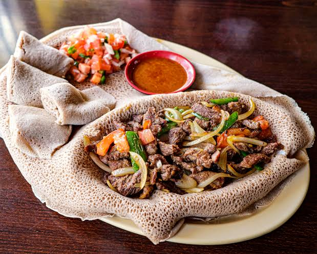
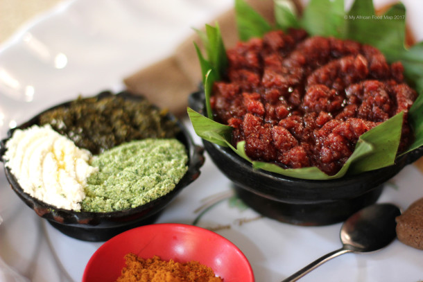
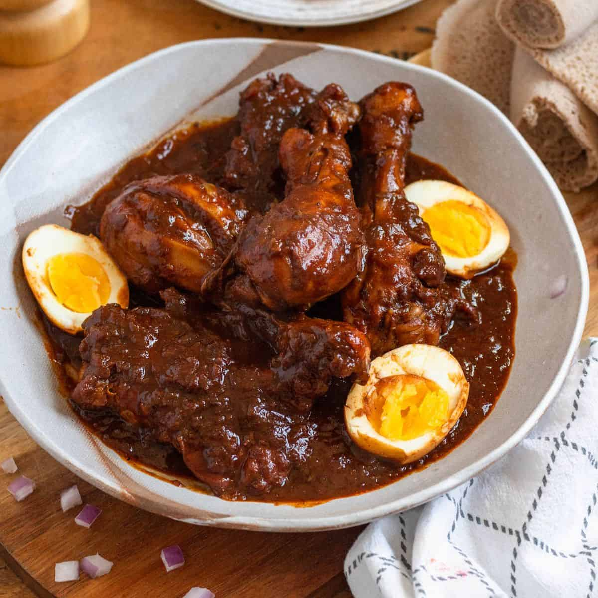
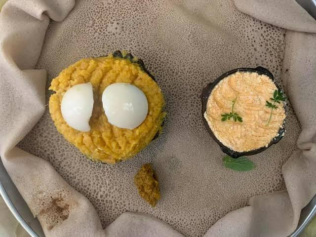

Experience the rich heritage of Ethiopian cuisine at Tujube Restaurant. From sizzling Tibs and spiced Kitfo to slow-simmered Doro Wat and traditional Anchote, every dish is prepared fresh to bring people together


A popular Ethiopian dish made from sautéed meat (beef, lamb, or chicken) with onions, peppers, and spices, served with injera.

A traditional Ethiopian dish made from minced raw beef, seasoned with spices and served with a side of injera.

A traditional Ethiopian chicken stew made with berbere spice, onions, garlic, and hard-boiled eggs, served with injera.

A nourishing, traditional root delicacy prepared with spiced butter and rich cultural heritage.
Walking into Tujube Restaurant feels like coming home. The Doro Wat has the deepest, richest flavor I have tasted outside of my grandmother's kitchen, and the Anchote is prepared to perfection. Truly the best dining experience in town